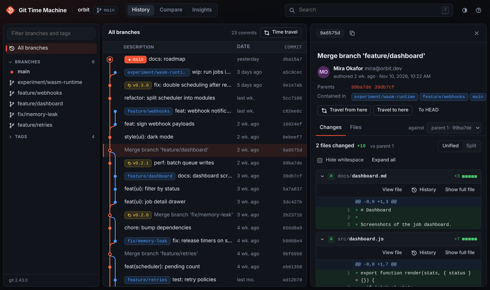
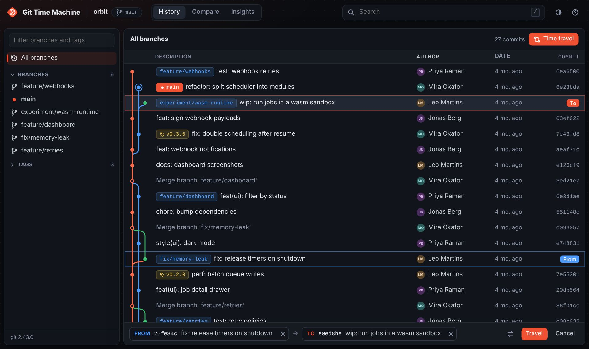

Commit graph
Branch lanes, merges and badges for branches, remotes and tags. Smooth even with tens of thousands of commits.
git-tm opens any repository in your browser: a commit graph, diffs, blame and insights, and time travel between any two commits, forwards or backwards. One command, zero dependencies.
npx git-tm
Run it inside any repository, then open http://localhost:7890.
To keep it installed: npm install -g git-tm, then use git tm.

Built on the git you already have. Nothing to configure, nothing to upload. Building your own tool? Use it as a JavaScript library.
Branch lanes, merges and badges for branches, remotes and tags. Smooth even with tens of thousands of commits.
Pick any two points in history and see what changes on the way: forward, back in time, or across branches, one step at a time.
Unified or split view, word-level highlights, hide whitespace, full-file context, and diffs against any parent of a merge.
Walk the file tree as it was at any commit, read any file at any point in time with git blame alongside.
By message, author, path or code with git log -S. Paste a commit id to jump straight to it.
An activity heatmap for the past year, your project's weekly rhythm, and its top contributors.
Choose a From and a To: commits, branches, tags or your working tree. git-tm tells you which way you are going and what changes along the way.


Press t in History, click where you start and where you want to go, then hit Travel. Or use Travel from here on any commit.
Everything has a keyboard shortcut: j k to move, / to search, ? for the full list.
git-tm runs on your machine and only reads your repository.